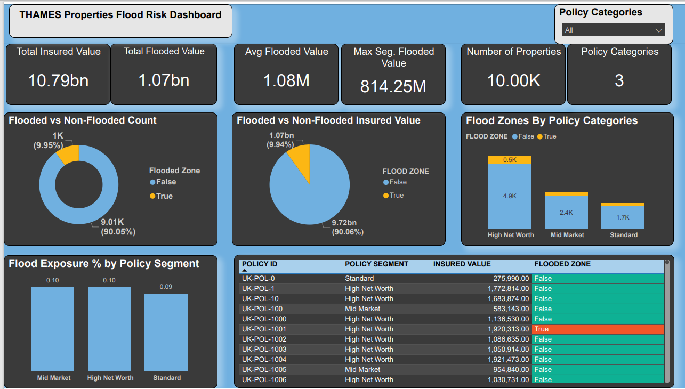
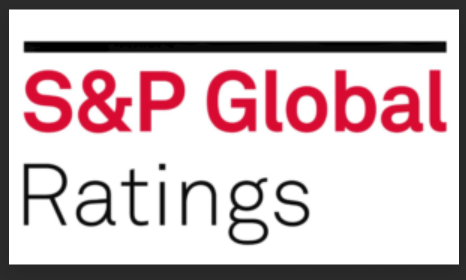
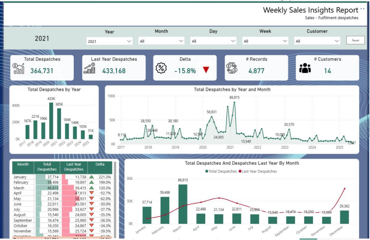
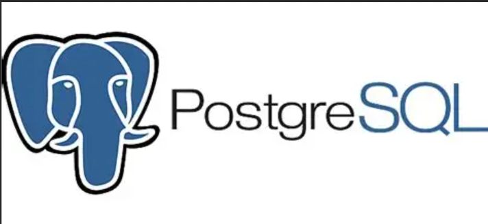
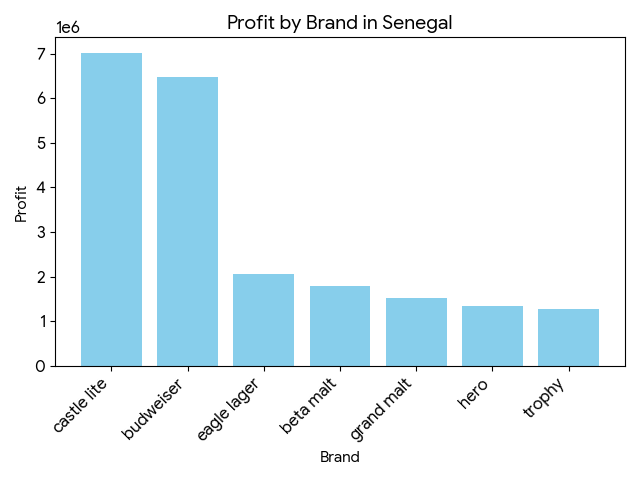
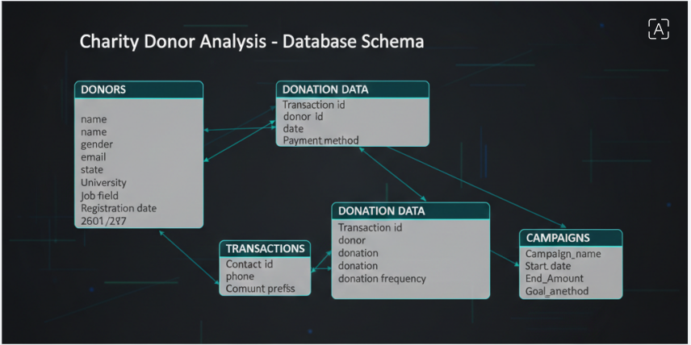

Designed and delivered a full-stack catastrophe risk analytics pipeline simulating
£10.79bn in Total Insured Value across 10,000 UK properties. Built a scalable Snowflake
data warehouse using Medallion Architecture (Raw → Analytics), leveraging Spatial
SQL (Point-in-Polygon) to identify flood zone exposure within Thames high-risk boundaries.
Engineered a secure, enterprise-grade RBAC framework following the Principle of Least
Privilege, enabling controlled BI access while maintaining delegated administrative governance.
Connected Power BI via DirectQuery for real-time analytics and developed advanced DAX
measures to calculate Loss Exposure %, Risk Concentration, and segment-level exposure
insights. Designed an executive-ready dashboard highlighting £1.07bn in flood-exposed
value (9.95% of portfolio), enabling rapid underwriting decisions.

Engineered an automated ESG intelligence pipeline using Python and Selenium to extract
sustainability ratings from Sustainalytics, Refinitiv, and S&P Global. Implemented dynamic
web interaction, cookie handling, XPATH-based element targeting, and structured data
consolidation into a unified ESG benchmarking dataset. Delivered a repeatable multi-source
data acquisition framework that enables cross-provider ESG comparison and supports
investment-grade sustainability analysis.

This Power BI report provides an integrated, decision-focused view of an organisation’s financial
performance, sales operations, and production efficiency.
By combining historical comparisons, time-based trends, and variance analysis, the report enables
leadership to quickly identify revenue decline, sales volatility, and cost inefficiencies.

Developed a full-scale SQL business intelligence model analyzing a multi-table DVD
rental database to uncover customer spending behavior, revenue concentration, rental
frequency cohorts, and geographic revenue distribution. Applied advanced joins,
CTE-driven segmentation logic, time-series analysis, and contribution modeling to
identify high-value customers, peak rental periods, and profit-driving categories.
Delivered data-driven insights that support revenue optimization, customer targeting,
and operational efficiency.

Developed an International Breweries Sales Analysis system using Python,
processing three years of multi-national retail data. Engineered a data pipeline
to analyze profitability across diverse brands and territories, resulting in
the identification of key market drivers in Anglophone and Francophone regions.
Delivered actionable visualizations that pinpointed underperforming SKUs and peak
sales cycles to support strategic marketing decisions.

Developed comprehensive workforce analytics solution to track and optimize labor
productivity across operations. Built interactive Power BI dashboard analyzing
key performance metrics including manpower utilization rates, productivity trends,
labor cost efficiency, and workforce allocation. Enabled data-driven decision-making
for resource planning and operational efficiency improvements through real-time
performance monitoring and predictive insights. Delivered actionable intelligence
that reduced labor costs while improving productivity benchmarks.

This project analyzed a charity’s donor and donation datasets to uncover donation patterns,
donor behavior, and revenue drivers.I combined donor demographics with transaction data
to evaluate donor engagement, identify high-value contributors, and highlight gaps between pledged
and actual donations.Key Functions utilized include JOINs, GROUP BYs, AGGREGATE FUNCTIONs, FILTERINGs,
SUBQUERIEs, and CASE statements.

This Power BI dashboard provides an end-to-end view of project financial health, labor cost progression,
and procurement transparency. It integrates completion metrics, budget forecasts, weekly cost burn-up
trends, and granular AP/PO transaction data. The report enables executives to monitor budget adherence,
margin performance, and cash exposure in near real time, while supporting drill-down analysis for
governance and audit purposes.

This project analyzed customer data to identify distinct customer segments based on personality traits and behavioral patterns.
By applying clustering techniques in Python, the analysis revealed four distinct customer personas that are valuable for
personalized insurance product recommendations. The insights from this project support targeted marketing strategies and
enhanced customer engagement by aligning insurance offerings with specific customer characteristics.
Developed a SQL-driven financial intelligence model analyzing 2011–2016 sales data to
uncover quarterly, annual, and regional profitability trends. Applied date transformation,
CTE-based time-series modeling, profit calculation logic, and subquery benchmarking
to identify high-performing quarters and top- and low-performing countries. Delivered
actionable insights that support revenue optimization, seasonal strategy planning,
and geographic expansion decisions.

This project focused on detecting fraudulent insurance claims using supervised machine learning
techniques in Python. Historical claims data was explored, cleaned, and transformed to identify
patterns associated with fraudulent behaviour. Multiple classification models were trained and
evaluated to assess their effectiveness in distinguishing between legitimate and fraudulent claims.
The models tested included Logistic Regression, Decision Tree, and Random Forest classifiers.
Model performance was compared using metrics such as accuracy, precision, recall, and F1-score,
with particular emphasis on recall to minimise missed fraud cases.
The project demonstrates an end-to-end fraud analytics workflow,
from exploratory data analysis and feature preparation to model evaluation and business-oriented
insights..